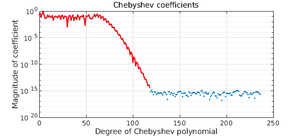
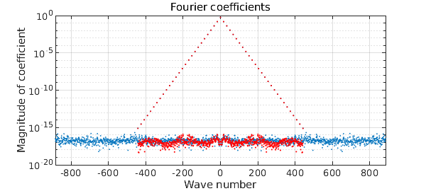

Recently we've added a doublelength flag as an option to the Chebfun constructor. A picture gives the idea. Here we see the usual Chebyshev coefficients for $\exp(x)$ plotted as red circles, together with blue dots for the coefficients of the same function constructed with doublelength.
f = chebfun('exp(x)');
f2 = chebfun('exp(x)','doublelength');
MS = 'markersize'; LW = 'linewidth';
hold off, plotcoeffs(f2,'.',MS,15)
hold on, plotcoeffs(f,'or',MS,9,LW,1.2)
When you construct a chebfun with doublelength, it comes out with twice the expected length. To be precise, here is what happens. First, Chebfun silently constructs a chebfun in the usual way. Then it does it again, but with the degree $d$ multiplied by 2. Thus the length, if it would ordinarily be $d+1$, actually comes out as the odd number $2d+1$.
The purpose of this option is to give a nice way to illustrate how the Chebfun constructor chops a Chebyshev series. Why does the constructor stop when it does? Basically because going any further would achieve nothing, because of rounding errors. Here's another example, with doublelength coefficients in blue and ordinary ones in red:
f = chebfun('sin(x)+sin(x.^2)',[0 10]);
f2 = chebfun('sin(x)+sin(x.^2)',[0 10],'doublelength');
hold off, plotcoeffs(f2,LW,1.2)
hold on, plotcoeffs(f,'r',LW,1.2)

If you play around with doublelength, you'll probably notice that sometimes Chebfun doesn't seem to make the right decision about where to chop the Chebyshev series. You are right, and we hope to improve this in a future release.
What about trigfuns, i.e., periodic Chebfun representations of periodic functions? The idea of doublelength here is analogous, and to be precise, it is again actually the degree that is doubled. Here is an example:
ff = @(t) 1./(2-cos(17*(t-1))); f = chebfun(ff,[-pi pi],'trig'); f2 = chebfun(ff,[-pi pi],'trig','doublelength'); hold off, plotcoeffs(f2,'.',MS,8) hold on, plotcoeffs(f,'.r',MS,8)
